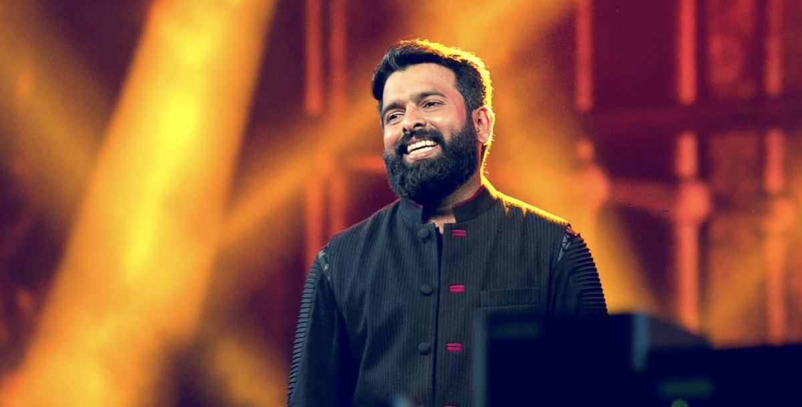
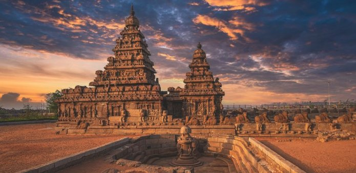
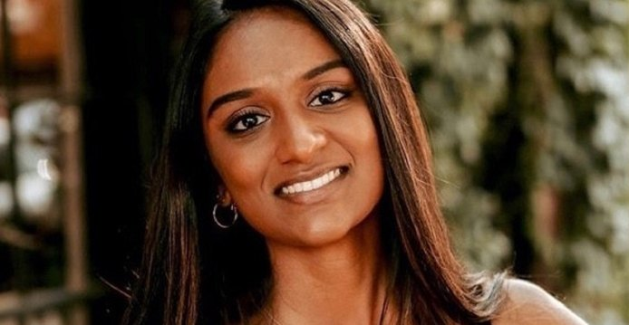
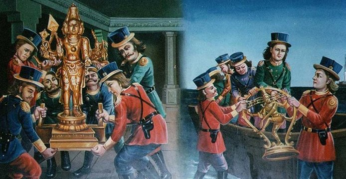

Uma Kumaran, Londons erste tamilische Abgeordnete
In einem Erdrutschsieg für die Labour Party wurde Uma Kumaran zur Abgeordneten für Stratford und Bow gewählt, nachdem die Generalwahl am Donnerstag, den 4. Juli 2024, stattfand.
In einem Erdrutschsieg für die Labour Party wurde Uma Kumaran zur Abgeordneten für Stratford und Bow gewählt, nachdem die Generalwahl am Donnerstag, den 4. Juli 2024, stattfand.
Tolle Neuigkeiten: Das schöne Sri Lanka verzichtet bald für 35 Länder auf die Visumpflicht, auch Deutschland ist dabei.
Parai bedeutet „Sprechen oder Kommunizieren“.

AJ Entertainment, bekannt für ihre erfolgreichen Konzerte im Jahr 2023 mit Musikgrößen wie Anirudh, Ilaiyaraaja und A.R. Rahman, hat ein weiteres Highlight für 2025 angekündigt.
Eine 10-jährige Gitarristin aus Chennai, Tamil Nadu, brachte die Juroren von America’s Got Talent zum Staunen.



